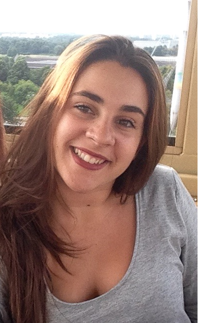

Leyre Millana Caballero
Camino del Molino, s/n, 28943 Fuenlabrada, Madrid
Correo: l.millana@alumnos.urjc.es
Teléfono: (34) 6xx xx xx xx
Fecha de nacimiento: 14/08/1995
Grado de Sistemas de Ingeniería de Sistemas Audiovisuales
09 del 2013 - Actualidad
Centro: URJC, Fuenlabrada
Bachillerato, CCSS
09 del 2011 - 05 del 2013
Centro: Colegio Hermanos Amorós, Madrid
Enseñanza Secundaria Obligatoria
09 del 2007 - 05 del 2011
Centro: Colegio Hermanos Amorós, Madrid
Prácticas curriculares en SATEC
09 del 2018 - 12 del 2018
Empresa: Sistemas Avanzados de Tecnología, S.A
Dependiente en tienda
H&M a través de ETT (Ranstad)
Decathlon Leganés
Opticas 2000 con Luxxotica, Corte Inglés de Pozuelo
Curso de verano de inglés
Portumna, Galway, Irlanda - 2010/2012
Entrenadora de Baloncesto
Equipo: HH. Amorós, Cadete femenino - 2013/2014
Equipo: Nazaret Oporto, Infantil mixto - Actualidad
Equipo: Nazaret Oporto, Minibasket - Actualidad
Permiso de conducir de tipo B
Madrid, 2014